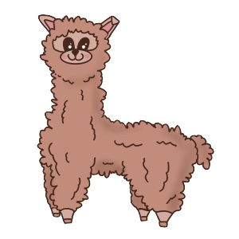

Hi, I'm Erin!
Student at The University of Michigan.
About Me
Hello! My name is Erin. I am an undergrad student at the University of Michigan currently pursuing a Computer Science major through the College of Literature, Science, and the Arts. I am very passionate about contributing back to my community and helping teach others about computer science. In addition to computer science, I am also interested in nutrition and environmental science. My hobbies include cooking, working out, and reading whenever I have time. On campus you can often find me heading to class, hanging out with the squirrels in the Diag or exploring around North Campus!
This year I have just completed an introductory computer science course offered at UofM. Within this course I was able to not only learn how to build several projects including a simulated elevator game, I was also given strong foundational skills on how to approach programming problems. The course was taught in C++ and I was able to work with a variety of group members throughout the semester. From this class and my others I have gained the ability to collaborate effectively despite the difficult virtual setting of the class.
Education
University of Michigan Ann Arbor
College of Literature, Science and the ArtsClass of 2024
- Focusing in Computer Science in the College of Literature, Science and the Arts
- Courses Taken: Elementary Programming Concepts, Science of Medicines, Introduction to Civil and Environmental Engineering, The Science Behind Natural Disasters
- Organizations: GEECS, Michigan EcoData, Program in the Environment Club, Biology Student Alliance, Student Advocates for Nutrition
Rochester Adams High School
Class of 2020- Involved with a number of student organizations such as National Honors Society, Marching Band, and Diversity Club
- Member of the Varsity Tennis team for all four years
- Completed eight Advanced Placement classes in US History, Chemistry, English Language and Composition, U.S. Government and Politics, Biology, Psychology, English Literature and Composition, and Calculus BC
Experience
Dressbarn Associate
July 2019 - December 2019
- Satisfied customers’ needs in a fast paced environment
- Organized workspace in order to maintain a clean working environment
- Improved verbal and social skills essential for communicating with co-workers and customers
Green Schools Committee Co-Chair
September 2019 - May 2020
- Coordinated an individual project to help reduce air pollution produced by automobiles
- Worked with other co-chairs to advocate against unnecessary plastic waste
- Collaborated with other co-chairs to organize environmental awareness-related events and recycling campaigns
Ascension Providence Rochester Hospital Volunteer
July 2019 - August 2020
- Assisted nurses in the Labor and Birth Unit
- Attended to patients’ needs, checked people in, and answered phone calls
- Gained insight into the responsibilities of healthcare professionals who specialize in labor and delivery
Contact Me
I am always open to chat about new opportunities and my passions.
Feel free to reach out to me at any of these links
Ann Arbor, MI
Phone: +1 (234)-567-8900
Email: lillian@umich.edu